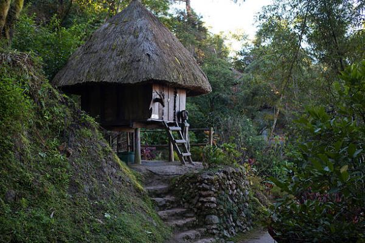
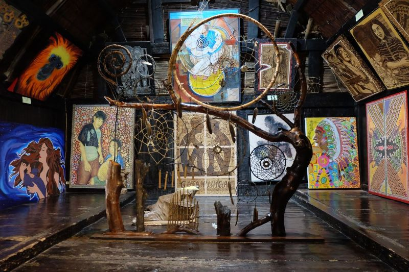

Tam-awan Village
Tam-awan Village is an artist-founded living museum and cultural park in Baguio City that preserves authentic Cordillera architecture and indigenous heritage. Features genuine, century-old knockdown Ifugao and Kalinga huts salvaged from the Cordillera interior and reassembled without nails

